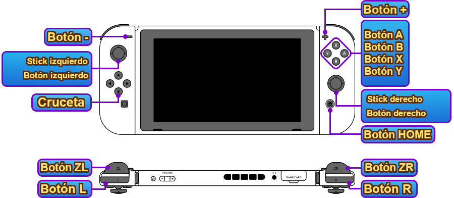

Controles

Controles del área
| ZL | (Mantener pulsado) Modo Reloj |
|---|---|
| L | Restablecer cámara / (Mantener pulsado) Cambiar a menú de accesos directos |
| + | Pausar |
| Stick izquierdo / pulsar stick izquierdo | Desplazarse / (+ Ⓑ) Correr / (Pulsar) Avanzar los diálogos |
| Cruceta | Arriba: Activar/desactivar navegación automática Abajo: Subirte a / Bajarte de la bicicleta Izquierda: Mostrar guía de Naviwoof Derecha: Abrir la aplicación Diario |
| Cruceta（＋ mantener L） | Arriba: Cambiar de Watcher Abajo: Cambiar Yo-kai acompañante Izquierda: Cambiar equipamiento / habilidades Derecha: Activar Telespejo portátil |
| ZR | (Mantener pulsado) Absorber Yo-ki |
| R | Cambiar la vista del minimapa |
| Ⓧ | Abrir el Yo-kai Pad |
| Ⓐ | Examinar / Hablar |
| Ⓑ | (Pulsación corta) Saltar |
| Ⓨ | Abrir el mapa |
| Stick derecho / pulsar stick derecho | Mover la cámara / (Pulsar) Activar el radar Yo-kai |
Controles de combate
| ZL | (Mantener pulsado) Apuntar / (Ⓐ mientras apuntas) Colocar marcador sobre el objetivo |
|---|---|
| L | Reestablecer la posición de la cámara |
| - | Activar/desactivar batalla automática |
| Stick izquierdo / pulsar stick izquierdo | Moverse / (+ Ⓑ) Correr / (Pulsar) Cambiar el objetivo aliado |
| Cruceta | Arriba / abajo: cambiar de personaje Izquierda / derecha: cambiar objetivo |
| ZR | (Mantener pulsado) Absorber Yo-ki |
| R | Cambiar técnica |
| + | Pausa táctica |
| Ⓧ | Usar técnica |
| Ⓧ＋Ⓐ | Transformación en forma Shadowside / Great / usar Animáximum |
| Ⓐ | "¡Bien hecho!", "¡Cambiar!", etc... |
| Ⓑ | (Pulsación corta) Esquivar |
| Ⓨ | Atacar |
| Stick derecho / pulsar stick derecho | Mover la cámara / (Mover brevemente) Cambiar objetivo / (Pulsar) Fijar/quitar fijación del objetivo |
Otros controles
| Cruceta / Stick izquierdo | Seleccionar opciones |
|---|---|
| L / R | Cambiar entre opciones o pestañas |
| Ⓐ | Confirmar |
| Ⓑ | Atrás / Cancelar |
| R | (Durante eventos) Avanzar rápidamente los diálogos |
| Ⓧ | (Mantener pulsado durante eventos) Saltar el evento |